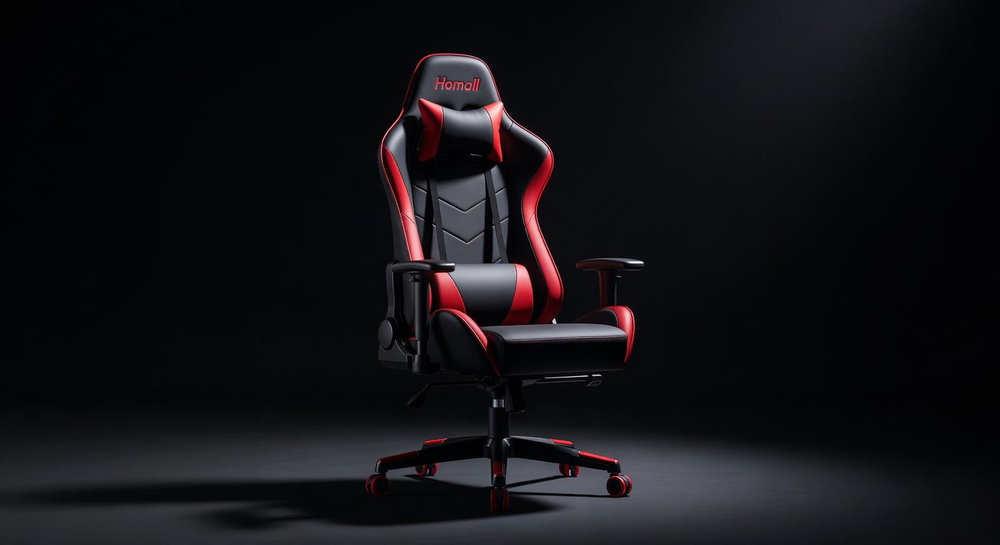
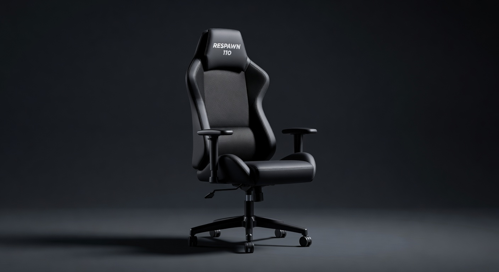
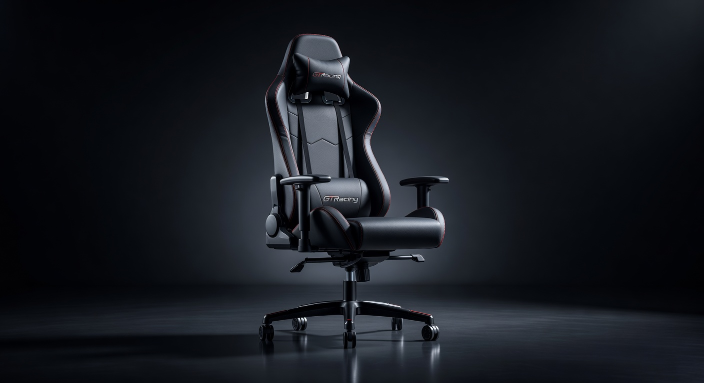
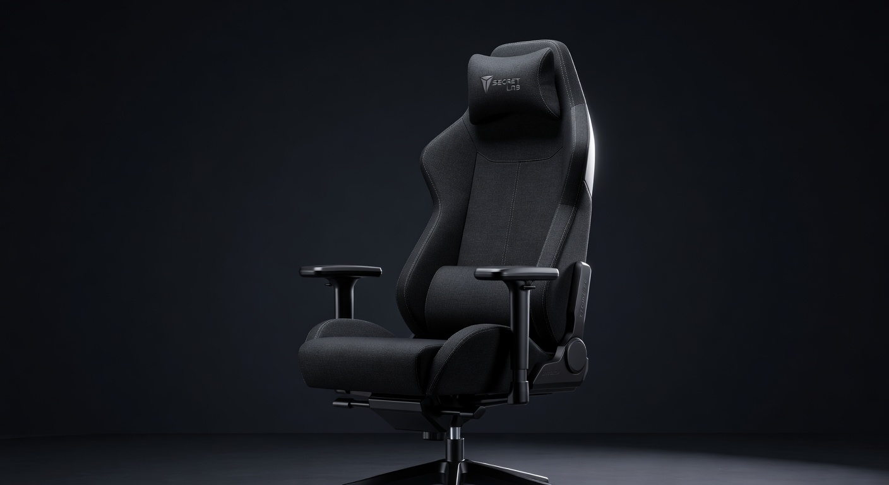
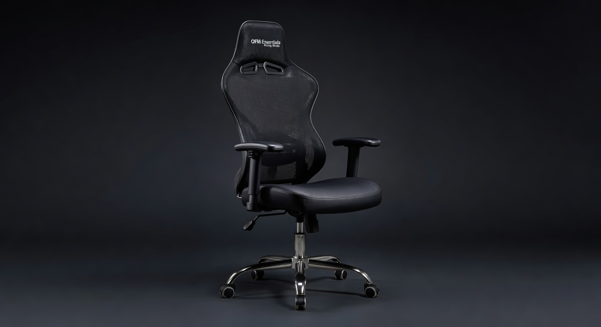

Best Budget Gaming Chairs Under $200 (2026)
Most gaming chair guides push $400+ options. This one doesn't. We researched chairs in the $80–$200 range and found five that actually hold up — with real lumbar support, decent build quality, and ergonomics that won't destroy your back after a long session. Your back doesn't know the price tag. Your wallet does.
Jump to a Section
1. Best Overall Gaming Chair Under $150

The Homall hits the sweet spot between price and build quality. The PU leather holds up well, the adjustable lumbar pillow is actually useful (not just decorative), and the recline range (90°–180°) is generous for the price. Height-adjustable armrests and a sturdy base make this feel more expensive than it is. Assembly is straightforward — expect 30–45 minutes.
Pros
- Solid 300 lb weight capacity
- Adjustable armrests (height)
- Full recline to 180°
- Multiple color options
- Adjustable lumbar pillow
Cons
- Armrests feel plasticky
- Lumbar pillow not attached (can shift)
- PU leather may peel after 2+ years
2. Best Gaming Chair Under $100

If $130 is still too much, the RESPAWN 110 is the best we found at the $100 mark. The build isn't as solid but it's adequate for casual-to-moderate gaming sessions. The integrated headrest keeps your neck supported — a feature the Homall lacks at this price. Easy assembly (~20 min) is a genuine plus.
Pros
- Integrated headrest cushion
- Fastest assembly in the guide (~20 min)
- Good for smaller frames
- Lowest price with neck support
Cons
- 275 lb max — not for larger builds
- Fixed armrests (no height adjust)
- Less recline range than competitors
3. Best for Taller Gamers (~$160)

Most budget chairs are sized for average height — back support cuts off at your shoulders if you're 5'10"+. The GT099 accommodates up to 6'2" properly and has the highest weight capacity in this guide at 350 lbs. The 4D adjustable armrests (move in four directions) are unusually good at this price point.
Pros
- Fits taller frames up to 6'2"
- Highest capacity at 350 lbs
- 4D adjustable armrests
- High backrest covers full spine
Cons
- Bulky footprint — needs more floor space
- Heavier than competitors (harder to move)
- Overkill for under 5'9"
4. Best at $200 — Premium Feel on a Budget

At the top of the budget range, Secretlab's Titan Lite brings noticeably better materials and build quality than anything else at this price. The SoftWeave fabric doesn't peel (unlike PU leather), the lumbar support system is built directly into the chair back (not a loose pillow), and it feels durable over years rather than months. If you can stretch to $199, this is worth the extra $70 over the Homall.
Pros
- SoftWeave fabric won't crack or peel
- Integrated lumbar (not a pillow)
- Better long-term durability (3–5 years)
- Reputable brand with good support
Cons
- Top of our budget range at $199
- Fewer color options at this tier
- Lower weight cap than GTRacing
5. Best for Office + Gaming Use (~$90)

If your gaming chair doubles as your work chair, the OFM Essentials is the pick. It looks professional enough for video calls while still having the ergonomic support gamers need. The mesh back breathes far better than PU leather — a real advantage if you game for 4+ hours or live somewhere warm. The look is understated enough to not scream "gaming setup" in a professional context.
Pros
- Office-appropriate look for WFH
- Mesh back stays cool during long sessions
- Lowest price in the guide at ~$90
- Won't peel (no PU leather)
Cons
- 250 lb capacity — lowest in the guide
- Less recline range than gaming-first chairs
- Less cushioning than PU leather chairs
Quick Comparison: Best Budget Gaming Chairs 2026
| Chair | Price | Material | Weight Cap | Best For | Buy |
|---|---|---|---|---|---|
| Homall Gaming Chair | ~$130 | PU Leather | 300 lbs | Best Overall | Amazon → |
| RESPAWN 110 | ~$100 | PU Leather | 275 lbs | Under $100 | Amazon → |
| GTRacing GT099 | ~$160 | PU Leather | 350 lbs | Tall Gamers | Amazon → |
| Secretlab Titan Lite | ~$199 | SoftWeave Fabric | 285 lbs | Premium Feel | Amazon → |
| OFM Essentials Racing | ~$90 | Mesh | 250 lbs | Office Hybrid | Amazon → |
Gaming Chair Buying Guide: What Actually Matters
Lumbar Support: The Deal-Breaker
This is the only spec that matters for your health. A chair without real lower-back support will cause pain regardless of price or brand. Look for: built-in lumbar (best), adjustable lumbar pillow (acceptable), or mesh that contours naturally. Avoid chairs with only a decorative pillow and no actual spinal contact.
PU Leather vs Fabric vs Mesh
PU leather looks sleek and is easy to wipe clean, but almost all budget PU peels or cracks after 18–30 months of daily use — it's the single most common complaint in chair reviews. Fabric (like Secretlab's SoftWeave) breathes better and doesn't degrade the same way. Mesh is the coolest option for warm climates but offers less padding. If longevity matters over aesthetics, avoid PU at the budget tier.
Weight Capacity: Don't Ignore It
Budget chairs often list capacity at or near their structural limit. If you're anywhere near the stated max, size up. A chair rated 275 lbs used by a 260 lb person will wear out significantly faster than one with 350 lb capacity at the same weight. The GT099's 350 lb rating is generous and means the structure is overbuilt — a durability advantage.
Armrests: 1D vs 4D
1D armrests only adjust height. 4D armrests adjust height, depth, width, and angle — and make a genuine difference for desk positioning and shoulder strain. At the budget tier, 4D is rare (GTRacing GT099 has it). Height-only armrests are fine if your desk is at the right height. Fixed armrests are the worst option for long sessions.
How Long Will a Budget Chair Last?
At $80–$130 expect 1.5–3 years with daily use. At $150–$200, expect 2–5 years. Main failure points: PU leather peeling, gas cylinder weakening, and armrest plastic cracking. The Secretlab Titan Lite routinely lasts 4+ years because fabric doesn't peel and the construction is more robust.